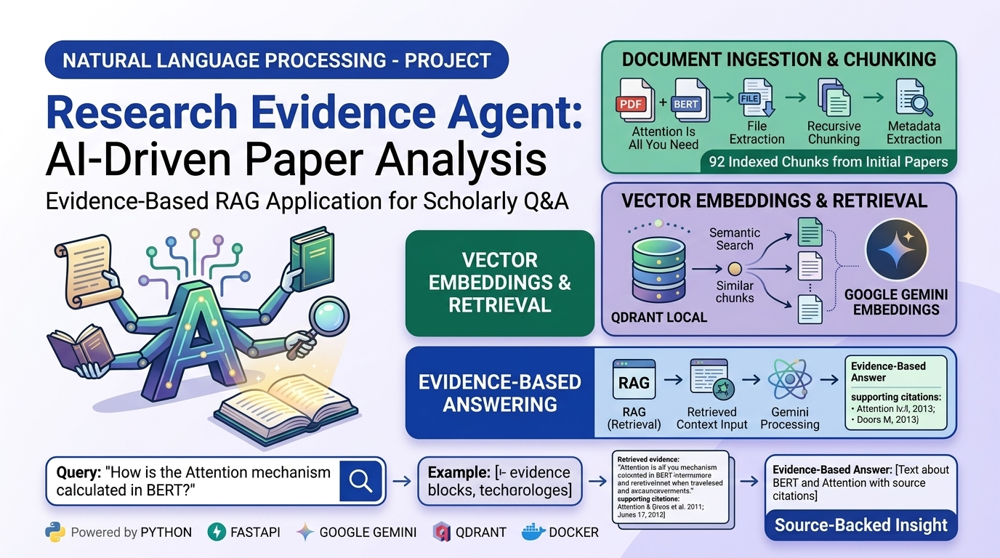
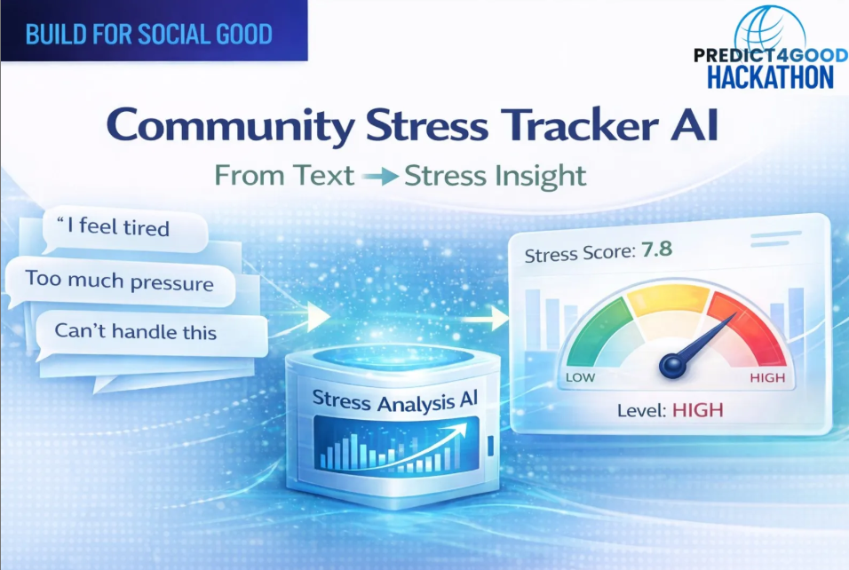
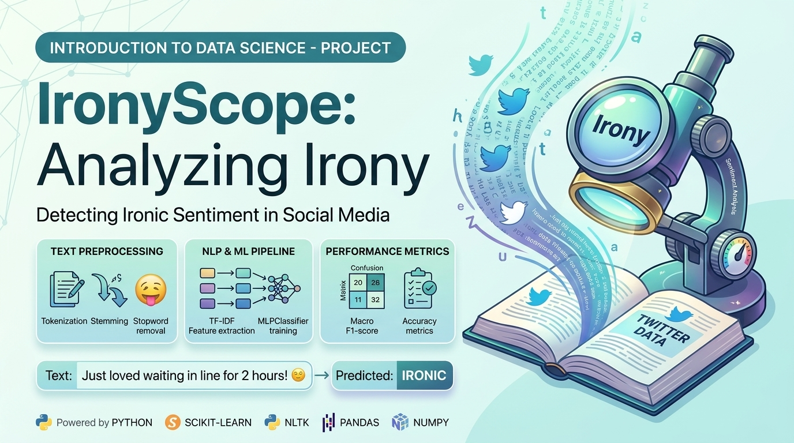

WHAT I'VE BEEN WORKING ON
My Projects
A collection of projects exploring Artificial Intelligence, Natural Language Processing, and practical applications of machine learning alongside other side projects.
AI & Machine Learning

Research Evidence Agent
Technologies: Python · PyMuPDF · Gemini API · Qdrant ·
FastAPI · Pydantic · Docker

Research Evidence Agent
Technologies: Python · PyMuPDF · Gemini API · Qdrant · FastAPI · Pydantic · Docker
A research assistant that retrieves relevant information from academic papers and generates answers grounded in the source documents. The project explores how Retrieval-Augmented Generation (RAG) can make it easier to find information in research papers without relying entirely on an LLM's existing knowledge.
Approach: PyMuPDF was used to extract text from PDF documents, which was divided into smaller, overlapping chunks. These chunks were converted into vector embeddings using Google's Gemini embedding model and stored in a local Qdrant database.
When a question is submitted, the application retrieves relevant chunks and passes them to a Gemini model to generate an answer based on the retrieved content.
Implementation: The backend was developed using FastAPI and containerised with Docker. A checkpoint mechanism was also implemented to help manage document indexing.
Testing: The completed prototype was tested using two research papers, producing 92 document chunks for retrieval. The application was also tested through its FastAPI endpoint inside a Docker container.
Technical Workflow
The system follows two connected processes: document indexing and question answering.
PDF Documents
Research paper uploads
Text Extraction
PyMuPDF
Text Chunking
Overlapping chunks
Embeddings
Gemini Embedding Model
Vector Database
Qdrant · Embedded document chunks
User Question
Query submission
Query Embedding
Gemini Embedding Model
Similarity Search
Qdrant retrieval
Retrieved Context
Relevant document chunks
LLM Answer Generation
Gemini API · Retrieved context
Evidence-Grounded Answer
Generated response based on retrieved content
NLP Study Assistant
Technologies: Python · Gemini API · Google GenAI SDK
NLP Study Assistant
Technologies: Python · Gemini API · Google GenAI SDK
A command-line AI learning assistant designed to support beginner NLP students. It provides concept explanations, practice questions, and feedback on submitted answers.
The application also incorporates conversation history management, token tracking, response validation, and retry handling.
Technical Workflow
The application manages the interaction between the learner, the language model, and the response-handling components.
User Input
Question or answer submission
Input Handling
Request processing
Prompt Construction
Instructions and conversation context
Gemini API
LLM-generated response
Response Validation
Check and handle the generated response.
Token Tracking
Monitor token usage.
Conversation History
Maintain interaction context.
Learning Interaction
Explanations · Practice questions · Answer feedback

Community Stress Tracker AI
Technologies: Python · PyTorch · DistilBERT · Streamlit

Community Stress Tracker AI
Technologies: Python · PyTorch · DistilBERT · Streamlit
A group-developed AI system that analyses social media text to estimate community stress levels across five emotion classes.
Built using DistilBERT, the system achieved 82.67% accuracy and includes stress scoring, score normalisation, and batch-level aggregation.
Technical Workflow
Social media text is processed by a Transformer-based classifier before being aggregated into community-level stress indicators.
Social Media Text
Text input
Preprocessing
Text preparation
Tokenization
Transformer input
DistilBERT Classification
Emotion prediction
Emotion Classification
Five emotion classes
Stress Scoring
Score calculation and normalisation
Batch Aggregation
Community-level summaries
Streamlit Dashboard
Community stress visualisation

PDCOVIDNet-2
Technologies: Python · PyTorch ·
Torchvision · NumPy · Pandas · Scikit-learn ·
Matplotlib
PDCOVIDNet-2
Technologies: Python · PyTorch · Torchvision · NumPy · Pandas · Scikit-learn · Matplotlib
A Computer Vision and Robotics course project implementing a custom convolutional neural network to classify chest X-ray images into three categories: COVID-19, viral pneumonia, and normal.
Architecture: The model uses two parallel branches of convolutional blocks with different dilation rates (1 and 2) to extract image features. Their outputs are combined and passed through additional convolutional and fully connected layers for classification.
Implementation: Images from the Chest X-ray Images dataset were resized to 224 × 224 and converted to grayscale. WeightedRandomSampler, class-weighted loss, and image augmentation techniques were used during training.
Model performance was evaluated using accuracy, precision, recall, and macro F1-score.
The implementation was inspired by PDCOVIDNet: A Parallel-Dilated Convolutional Neural Network Architecture for Detecting COVID-19 from Chest X-ray Images (Chowdhury et al., 2020).
Technical Workflow
The architecture processes X-ray images through two parallel convolutional branches, combining their extracted features for final classification.
Chest X-ray Input
Three-class image dataset
Image Preprocessing
Grayscale conversion · 224 × 224 resizing · Augmentation
Branch 1
Convolutional blocks with dilation rate 1
Branch 2
Convolutional blocks with dilation rate 2
Feature Fusion
Combined branch outputs
Classification Layers
Additional convolutional and fully connected layers
Three-Class Prediction
Model Evaluation
Accuracy · Precision · Recall · Macro F1

Irony Detection in Tweets
Technologies: Python · NLTK · Scikit-learn · TF-IDF

Irony Detection in Tweets
Technologies: Python · NLTK · Scikit-learn · TF-IDF
An NLP-based binary text classification project developed for the Introduction to Data Science course. The project focuses on detecting irony in Twitter text by classifying tweets as either ironic or non-ironic.
The workflow includes tokenisation, language detection, emoticon-to-text conversion, accented character removal, stemming, and stopword removal.
The processed text is transformed into n-gram TF-IDF features. Five Scikit-learn classifiers were implemented and compared: Multinomial Naive Bayes, LinearSVC, Stochastic Gradient Descent (SGD), Decision Tree, and Multi-layer Perceptron (MLP).
Evaluation: In the original comparative evaluation, SGD achieved the best reported performance, with 65% accuracy and a 65% micro-average F1-score. MLP achieved an F1-score of 55% in that comparison.
Technical Workflow
The project compares multiple traditional machine learning classifiers using TF-IDF representations of preprocessed tweets.
Twitter Dataset
Tweet collection
Text Preprocessing
Cleaning and normalisation
TF-IDF
N-gram feature extraction
Naive Bayes
LinearSVC
SGD
Decision Tree
MLP
Performance Comparison
Accuracy and micro-average F1-score
Comparative Findings
SGD · 65% accuracy in the original comparative evaluation
Other Projects

Vista.Q
Tools: Figma
Focus: UI Design · Wireframing · Prototyping
Vista.Q
Tools: Figma
Focus: UI Design · Wireframing · Prototyping
A collaborative UI/UX design project developed during my internship at TechnoVista Ltd. The project involved designing Vista.Q, a real-time quality tracking system intended for garment factories.
The interface was designed to support production monitoring and quality management, with a focus on making information accessible through a clear, user-friendly, and device-compatible design.
Year: 2025

Quality Information System
Tools: Figma
Focus: UI Design · Wireframing · Prototyping
Quality Information System
Tools: Figma
Focus: UI Design · Wireframing · Prototyping
A collaborative UI design project developed during my internship at TechnoVista Ltd. It focused on the Quality Information System (QIS), a digital platform by the Ministry of Agriculture of Bangladesh designed to provide accessible agricultural services.
The design incorporated features such as weather updates and access to different services, with an emphasis on clear navigation and a user-friendly interface.
Year: 2024

HomiFi - Accommodation Booking System
Tools: Figma
Focus: UI Design · Wireframing · Prototyping
HomiFi - Accommodation Booking System
Tools: Figma
Focus: UI Design · Wireframing · Prototyping
A collaborative UI design project for an accommodation booking system that brings together different types of stays, including hotels, apartments, private rooms, and locally hosted rentals.
The project focused on making affordable and locally hosted accommodation options easier to discover and book through a unified interface.
Year: 2024

Imbricating Colorful Squares
Python
Imbricating Colorful Squares
Python
A final graphics project developed using Python for the Code In Place Certification course.
The design features a series of nested, vibrant squares, demonstrating the use of loops, colour theory, and geometric precision.
Year: 2023
GitHub Repository ⬈HAVE A PROJECT IN MIND?
Let's Connect
Interested in my work or have an opportunity to discuss? Feel free to get in touch!